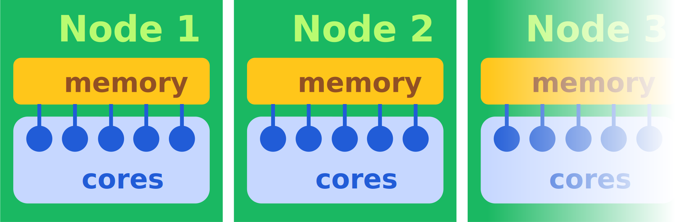

Parallel computing¶
As supercomputers become larger, we can explore new domains of plasma physics with more expensive simulations. However, this type of computer requires the computation to be made by many computing cores at the same time, in parallel.
Optimizing parallel algorithms on these new machines becomes increasingly difficult, because their architecture complexity grows together with their power. See this introduction to parallelism.
Basic architecture of supercomputers:

Many nodes communicate through a network. Each node owns its own memory.
Nodes are composed of many computing units (most often cores) which share the memory of the node.
{kind=link}
This defines two levels of parallelism:
“Distributed memory”: Communicating information between nodes that do not access the same memory.
“Shared memory”: Synchronizing the operations of the cores that share the same memory.
Distributed memory
The protocol that handles the communication of data between different nodes is called MPI. Smilei will run independently on each of those locations, and we call each of these instances an MPI process (sometimes also called task). One MPI process is usually associated to many cores inside one single node, but it does not necessarily occupy all the cores in this node.
The data is split into small pieces, called patches, so that it can be distributed to those MPI processes. This is called domain decomposition.
Each MPI process executes all the computation necessary to handle the patches he has been given using the ressources he has access to. The main difficulty is to provide an equal amount of work to each MPI process. This is called load balancing. We will see how Smilei distributes the patches to MPI processes in order to have a uniform load.
Shared memory
Inside a given MPI process, where the shared memory contains many patches to be computed, the work must be synchronized between available cores. This is handled by the OpenMP protocol.
OpenMP creates threads which are sequences of instructions to be executed by cores, and schedules the parallel work of all available cores accordingly.
Each thread will be assigned to successive patches, in parallel with other threads. This is an effective way to balance the load inside the MPI process: when a patch is done, a core will automatically work on the next patch withtout having to wait for another core that might still be working.
Summary
The simulation domain should be divided into many patches for two reasons:
to distribute the computational load and feed all threads associated to each MPI process
to be able to manage the load imbalance by moving patches between different MPI processes
But, be careful: an excessively refined decomposition (with too many small patches) will produce a large overhead due to communications and synchronizations.
The goal of this tutorial is to understand how to setup a simulation to get good performances. The following features will be addressed:
Decomposition of the simulation box into patches
Choice of the number of MPI processes and OpenMP threads
Smilei’s load balancing feature
Performance analysis with the
DiagPerformances
Physical configuration¶
Download the input file beam_2d.py. A small plasma ball is set with an initial velocity \(v_x=0.3\) and traverses the box.
Setup the tutorial¶
As explained in the setup page, you should make a new directory
to run your simulation. This directory should contain the input file that you just downloaded
and the executables smilei and smilei_test.
We introduce this tutorial talking about supercomputers but we will run here single node simulations. It could seems out of context but the idea is to illustrate how works the code parallelism and its limits.
Splitting the box¶
In a first test, we will use a single core with in a single MPI process to focus on the box splitting. Launch the simulation with 1 MPI and 1 thread only. For instance, you could use commands similar to:
export OMP_NUM_THREADS=1
mpirun -np 1 smilei beam_2d.py
The input file suggests to use 32x32 patches:
Main(
number_of_patches = [ 32, 32 ],
)
Run the simulation for various number of patches, and compare the computation time:
32 x 32 patches
16 x 16 patches
8 x 8 patches
a single patch
Computation times are provided at the end of the simulation:
Time in time loop: the whole PIC loopParticles: all particles operations except collisionsMaxwell: Maxwell equations and the electromagnetic boundary conditionsDiagnostics: allDiagblocks defined in the namelistSync Particles: particle exchange between patchesSync Fields:E,Bexchange between patchesSync Densities:Jexchange between patches
Details about timers
The Sync timers concern exchange between patches owned by a single MPI processes and/or by many.
In this case, these timers could contain waiting times due to load imbalance inherent to PIC simulations.
Whatever the case, Particles and Maxwell do not contain MPI waiting time,
they only accumulate pure computation time.
Load balancing, Mov window or Diagnostics (which can be seen like a disk synchronization)
are global operations which require communications, they can contain waiting time.
For many MPI processes simulation, these times are averaged on all processes.
Some detailed timing elements, such as minimum or maximum times on all processes
are provided in the file profil.txt and a full report can be obtained using the DiagPerformances.
Introduce Smilei’s parallelism¶
Let’s make the first step to introduce parallel processing of all the patches. We will use several OpenMP threads in a single MPI process.
Use a good patch configuration found in the previous step: 8x8 patches. The single patch simulation is maybe slightly faster but it cannot exhibit any parallelism.
Setup 1 MPI process, and 16 threads per process. You may need to adjust these settings according to your machine. TypicallyL
export OMP_NUM_THREADS=16
export OMP_SCHEDULE=dynamic
mpirun -np 1 smilei beam_2d.py
Make sure that, in the output log, it specifies the correct number of processes and threads.
Even though 16 threads are used, the speed-up is very poor.
Let us now use happi to analyse the simulation.
Open an ipython prompt, then run:
import happi
S = happi.Open("/path/to/beam_2d/")
You can have a quick understanding of what happens in the simulation using:
S.ParticleBinning(0).slide()
A ball of plasma (30 cells radius) is moving through the box (256x256 cells):
With 8 x 8 patches, the size of a patch is 32 x 32 cells. The plasma, which represents the main time cost, occupies only a few patches of the simulation. This means many threads are doing nothing.
With 16 x 16 patches, the size of a patch is 16 x 16 cells, an order of magnitude is earned regarding the number of patches loaded with particles. Verify the speedup.
With 32 x 32 patches, the size of a patch is 8 x 8 cells, even more patches are loaded with particles, but with a synchronization overhead.
Check the behavior of these three configurations running 16 threads.
For this test, in the best case configuration, an additionnal speed-up of 2 is obtained. This is modest, but accelerating computations requires to split the particle load. With a such local plasma, it is hard to achieve.
Imbalance¶
You applied some load balancing using OpenMP threading. Indeed, the threads will keep working patch after patch in parallel on all the available patches until all patches are done. This is called dynamic scheduling.
The static scheduling, instead, assigns an exclusive pool of patches to each thread. In this situation, threads will only work on their own pool, even if it is an empty region. This obviously prevents load balancing between threads. It is used on grids computing function of Smilei which is naturraly balanced.
To choose the type of OpenMP scheduling, you can set the environment
variable OMP_SCHEDULE to static. Typically:
export OMP_NUM_THREADS=16
export OMP_SCHEDULE=static
mpirun -np 1 smilei beam_2d.py
OpenMP offers intermediary solutions but regarding the granularity of
the level of parallelism, we advice the dynamic scheduling.
Imbalance and distributed memory¶
Run the 16 x 16 patches simulation but with a MPI-only configuration. Typically, you can write:
export OMP_NUM_THREADS=1
mpirun -np 12 smilei beam_2d.py
This is technically similar to the static scheduling of the previous section:
the pool of patches is explicitly distributed over MPI processes starting the simulation.
Compare the time spent in the PIC loop to that previous case.
We are now going to use the Performances diagnostic.
The list of available quantities can be obtained with:
S.Performances
Let us try:
S.Performances(map="hindex").plot()
You should obtain a map of the simulation box with one distinct color for each memory region (i.e. each MPI process). There are 16 regions, as we requested initially. You can see that these regions do not have necessarily the same shape.
Now plot the number of particles in each region:
S.Performances(map="number_of_particles").slide(cmap="smilei_r", vmin=0)
Clearly, at every given time, no more than only a few regions contain particles. This is a typical situation where almost all processes have nothing to do and wait for a single process to finish its computation.
You can also visualize the time taken for computing particles using:
S.Performances(map="timer_particles",cumulative=False).slide(cmap="smilei_r", vmin=0)
Balancing the load between processes¶
Smilei has an automated load-balancing feature that can move patches from one process to another in order to ensure they all have a similar load. Activate it in the input file using:
LoadBalancing(
every = 20
)
Then run the simulation again with 16 processes and
have a look at the Load balancing timer.
Observe differences in the computation time,
compare it to the time saved regarding the simulation without dynamic load balancing.
Warning
Sync timers are impacted by the imbalance of the
algorithm part which precedes it:
ParticlesSync DensitiesMaxwellSync ParticlesSync Fields
Use again the performances diagnostic to monitor the evolution of the regions and their computational load.
Realistic configuration¶
Note
To get familiar with Smilei’s domain decomposition, distributed and shared memory parallelism, we did not consider the NUMA (non uniform memory access) aspect of most supercomputers. Indeed, a node is generally composed of several sockets which own many cores each. Cores have privileged access to the memory associated to it socket.
In general, supercomputers should be adressed with both:
MPI: to go through nodes and sockets (to enhance memory affinity),
OpenMP: to feed threads and minimize imbalance
The following example uses 2 MPI processes with 8 threads each:
export OMP_NUM_THREADS=8
mpirun -np 2 smilei beam_2d.py
Between processes, threads, and the number of patches, there are many ways the simulation performances can be modified. There is no general rule for finding the optimal configuration, so we recommend trying several options.